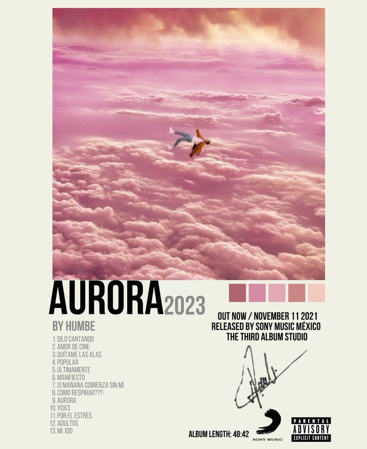
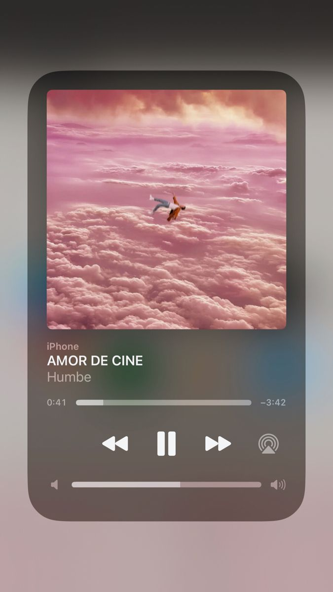

AURORA es un álbum de Humbe que representa nuevos comienzos, esperanza y crecimiento personal. A través de sus canciones, el artista transmite emociones profundas y experiencias que reflejan distintas etapas de la vida.
El nombre del álbum hace referencia al amanecer, simbolizando el inicio de una nueva etapa llena de oportunidades. Sus canciones combinan sonidos modernos, melodías envolventes y letras cargadas de sentimientos.
Entre las canciones más reconocidas relacionadas con esta etapa artística se encuentra "Amor de Cine", un tema que se convirtió en uno de los favoritos del público por su estilo romántico y su producción cuidadosamente elaborada.
AURORA explora temas como el amor, la esperanza, los sueños y la búsqueda de la felicidad. Cada canción está diseñada para transmitir emociones positivas y acompañar a quienes atraviesan momentos importantes en sus vidas.
Este proyecto ayudó a fortalecer la conexión entre Humbe y sus seguidores. Su estilo único, junto con letras sinceras y una producción de alta calidad, hicieron que el álbum fuera ampliamente apreciado por el público.
AURORA es considerado por muchos fans como un álbum lleno de luz y energía. Su mensaje de superación y crecimiento personal continúa inspirando a quienes escuchan las canciones de Humbe.
|
 Aurora |
 Amor de cine |